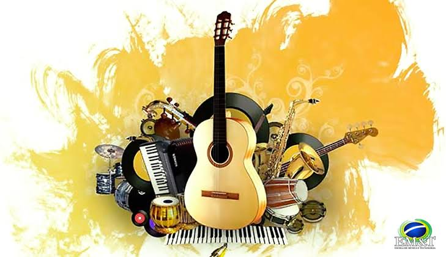

Meu primeiro post
Por: Vitória Silveira
Boas-vindas ao meu novo blog! Aqui vou compartilhar dicas de programação e curiosidades da área de musica.
É com muita alegria que os Alunos do Integral abrem as portas deste novo espaço. Aqui, A nossa missão é conectar dois universos fascinantes: a precisão da programação e a sensibilidade da música. Acreditamos que códigos e acordes têm tudo a ver. Afinal, Ambos criam harmonia a partir de uma sequência lógica e dão vida a novas ideias! Se você quer aprender a programar, Entender como a tecnologia transforma o som ou apenas descobrir curiosidades incríveis dosdos bastidores da música digital, Você está no lugar certo.Prepare os seus fones de ouvido, Abra o seu editor de código e sintonize com a gente. A nossa jornada musical e tecnológica começa agora!